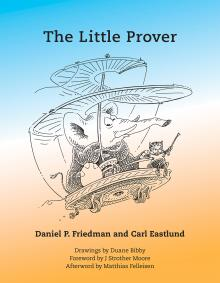

|  | The Little ProverWritten by Daniel P. Friedman and Carl Eastlund |
J-Bob is our little proof assistant, available on Github. For an introduction to J-Bob, see Appendix A of The Little Prover.
J-Bob is available for ACL2, Scheme, and Racket (via the Dracula package). J-Bob is open source, feel free to adapt our proof assistant to the programming language of your choice.
Bear in mind that J-Bob is simple so that its source code can be read and understood. As a result, using J-Bob can be tedious and tricky at best. We sympathize with any difficulties you have, and we look forward to the creative extensions that users of J-Bob may come up with to make it easier.
Pages 165-166: replace all occurrences of "cheese" by "eggs"
Page 167: Frame 10 RHS: add "-31" to the right of "29"
Page 169: Frame 21 LHS: drop "of chapter 2"
Page 170: Frame 25 LHS: drop "of chapter 2"
Page 171: Frame 32 LHS: drop "of chapter 3"
Page 178: Frame 60 LHS: drop "of chapter 5"
Page 178: Frame 60 LHS: replace "56" by "55"